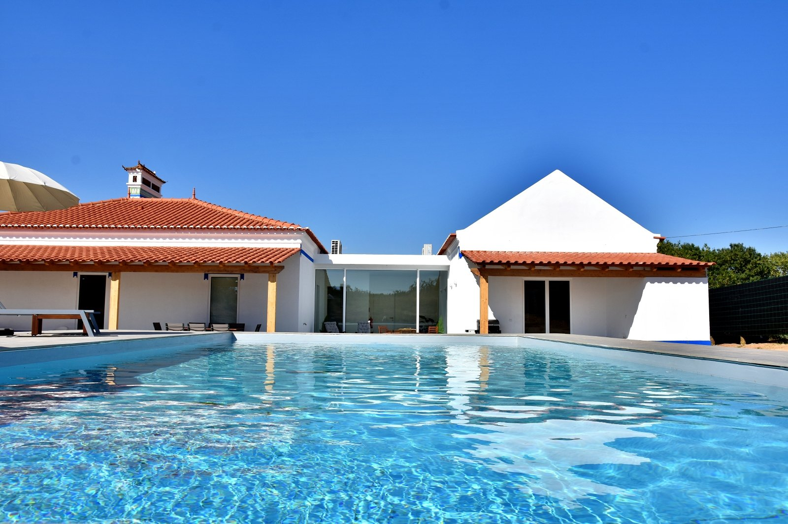
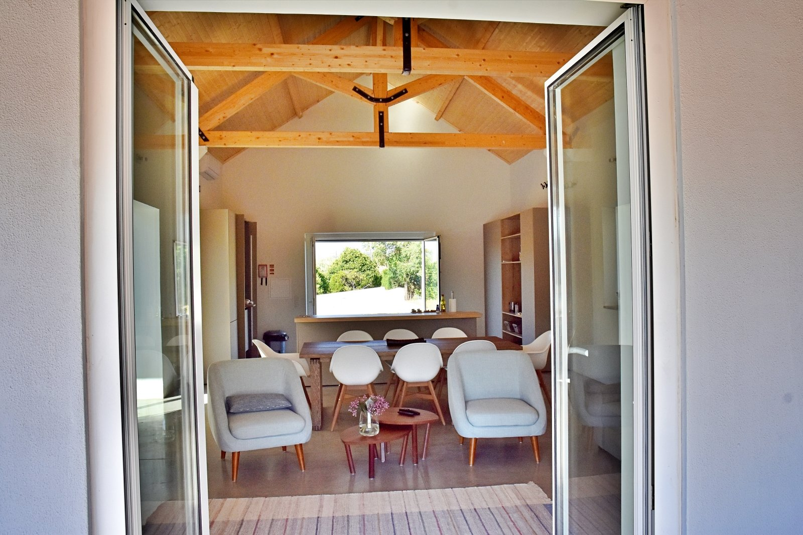

Fotografias
O que é. Como se vive.
A casa, o exterior e os quartos, em fotografias reais, sem filtros. Primeiro o que se vê de fora; depois o que se vive por dentro.
Fora: a piscina, o alpendre, o campo



Dentro: a sala, a cozinha, a biblioteca


Os quartos

Antes e depois

Um dos onze pares da transformação da casa: o quarto de paredes rosadas e o mesmo quarto hoje. Os outros dez (a casa e a piscina, o salão, a fachada, a chaminé, o pátio, o corredor, a pérgula, o poço e a nora) entram quando as fotografias chegarem ao repositório.
Demo r3: esta página usa as onze fotografias que já estão no repositório. A galeria completa, com os álbuns O Monte, Os Quartos, A Quinta, Antes e Depois e Montemor-o-Novo, entra quando os originais passarem do Dropbox para o repositório.